DICHO Y HECHO
03 / 04Diseño editorial · 2026
- Diseño editorial
- Diseño de libros
- Troquelado
- Sistema visual
- Dirección de arte
Dicho y hecho es un proyecto de diseño editorial para una colección de libros troquelados sobre objetos domésticos y refranes populares españoles.
Cada volumen parte de un refrán tradicional para explorar un mueble u objeto del hogar desde una perspectiva cultural, simbólica y visual. Uno de los volúmenes principales, Quien se fue a Sevilla perdió su silla, se centra en la silla como objeto cotidiano cargado de significado social: lugar de descanso, presencia, autoridad, pertenencia y ausencia. El refrán sirve para reflexionar sobre cómo ocupar un asiento también puede significar ocupar una posición.
Mediante cubiertas de acetato, formas troqueladas, sistemas cromáticos monocromáticos y una maquetación limpia, el libro se convierte en un objeto que comunica tanto por su contenido como por su forma física. La colección incluye cubiertas, páginas interiores, marcapáginas, un díptico, aplicaciones en bolsas de tela y una campaña de lanzamiento en redes sociales.

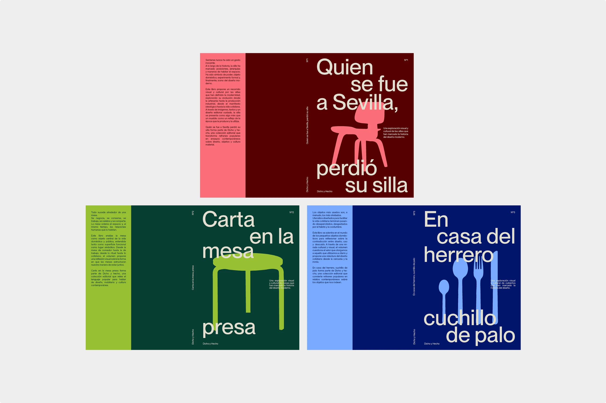


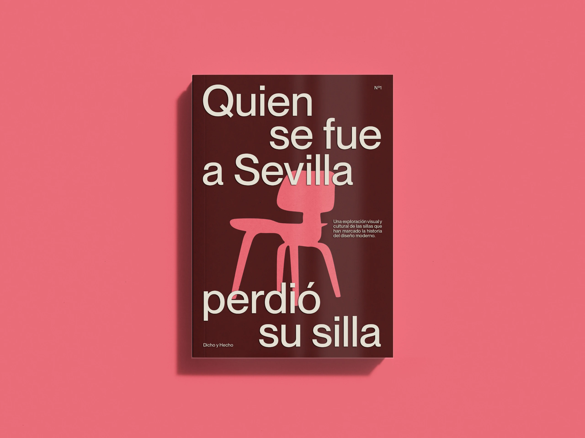

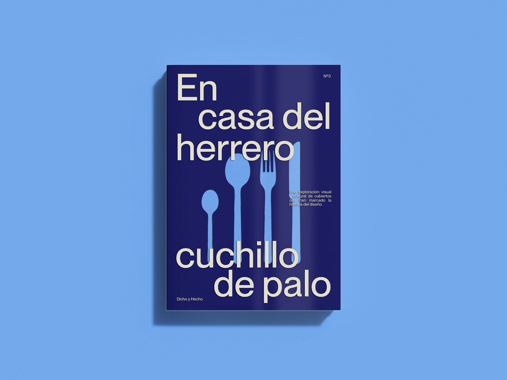

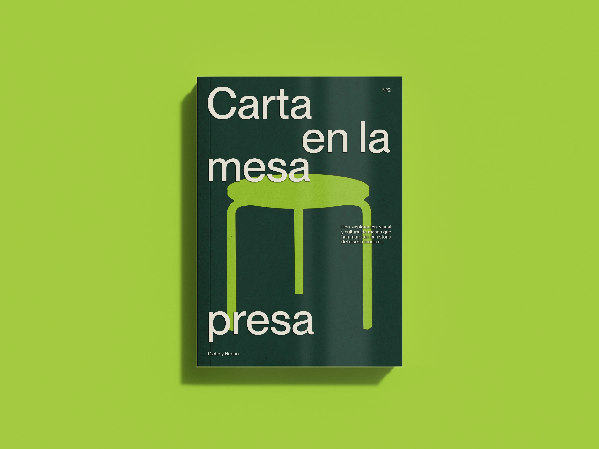

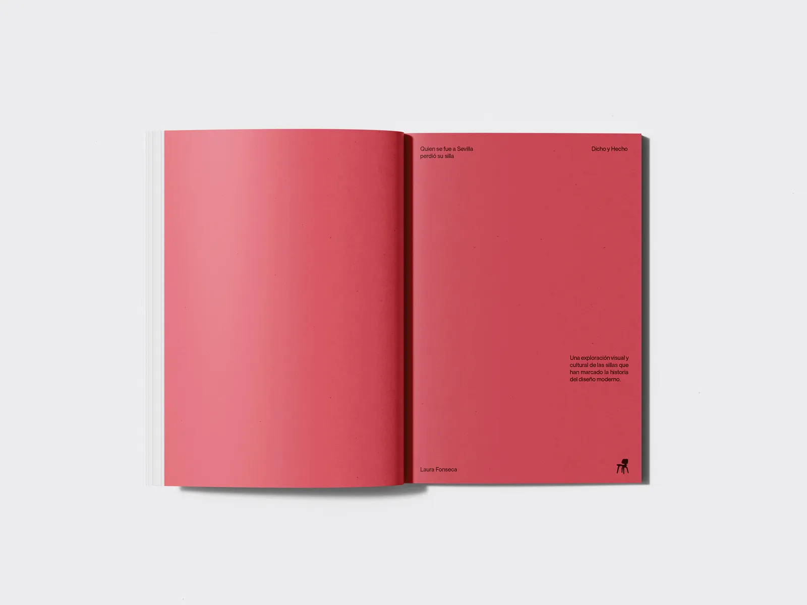

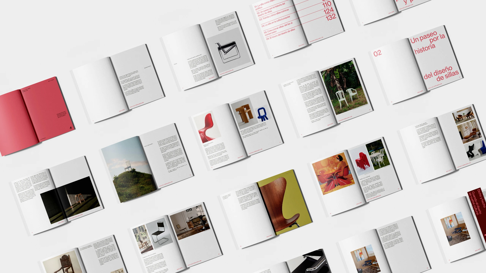

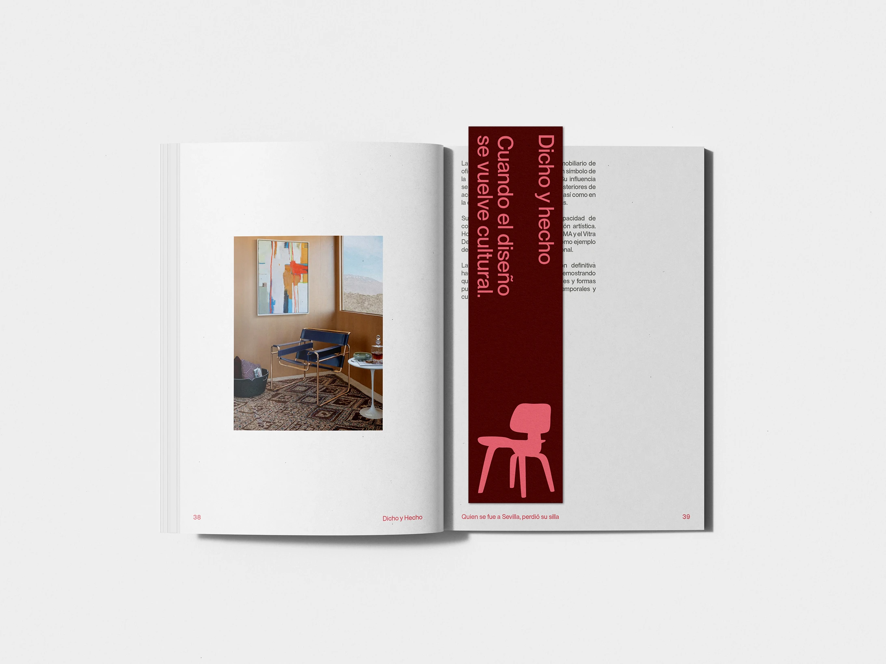

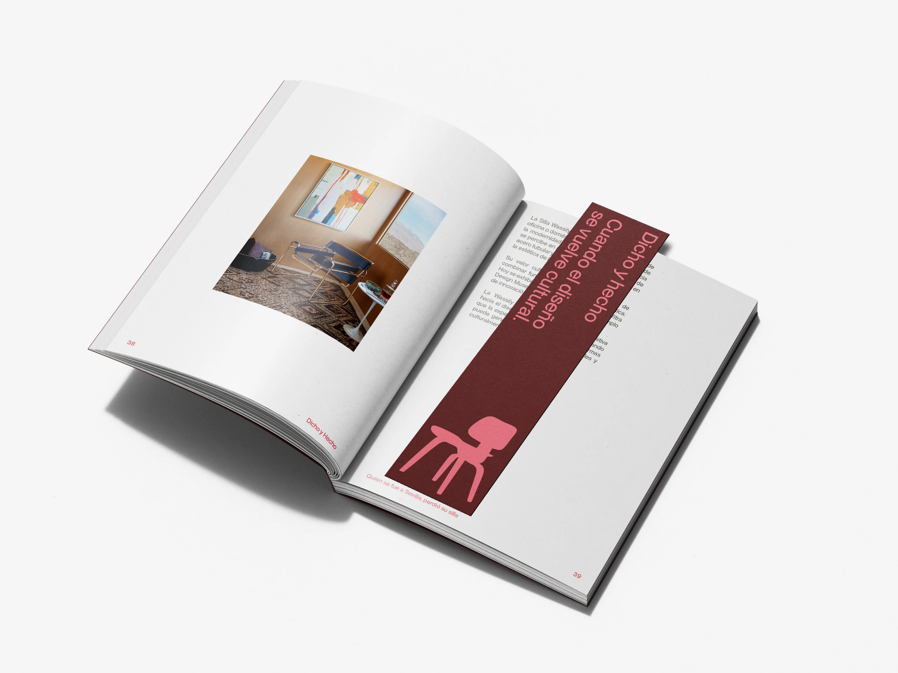

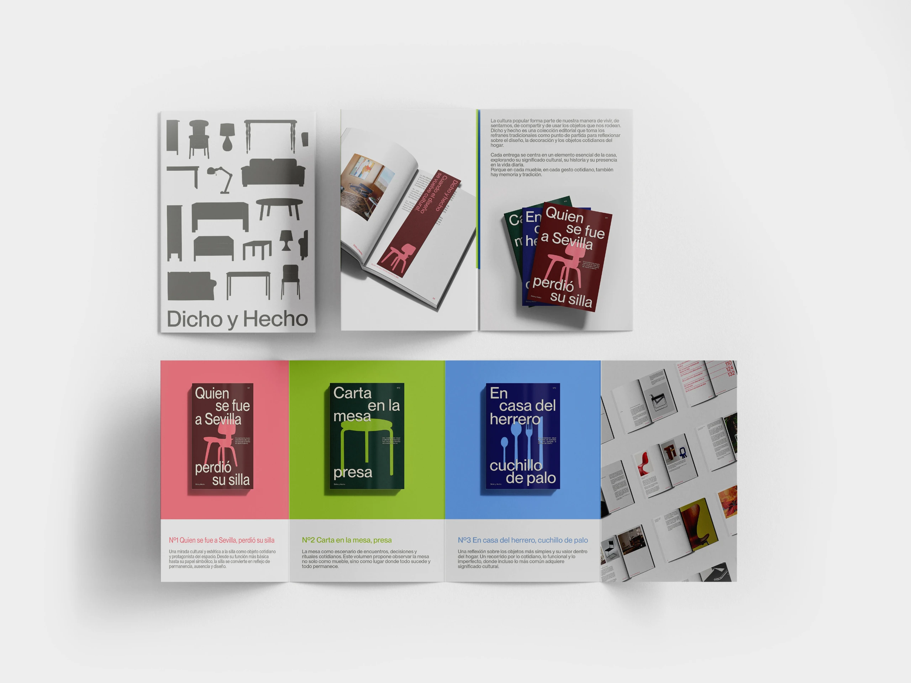

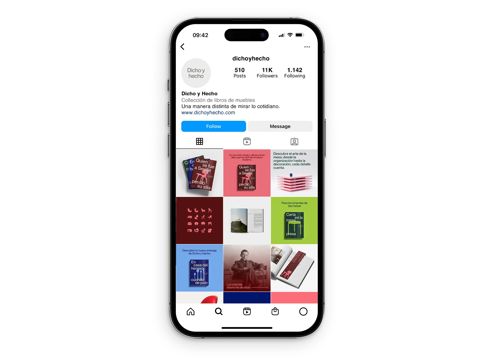

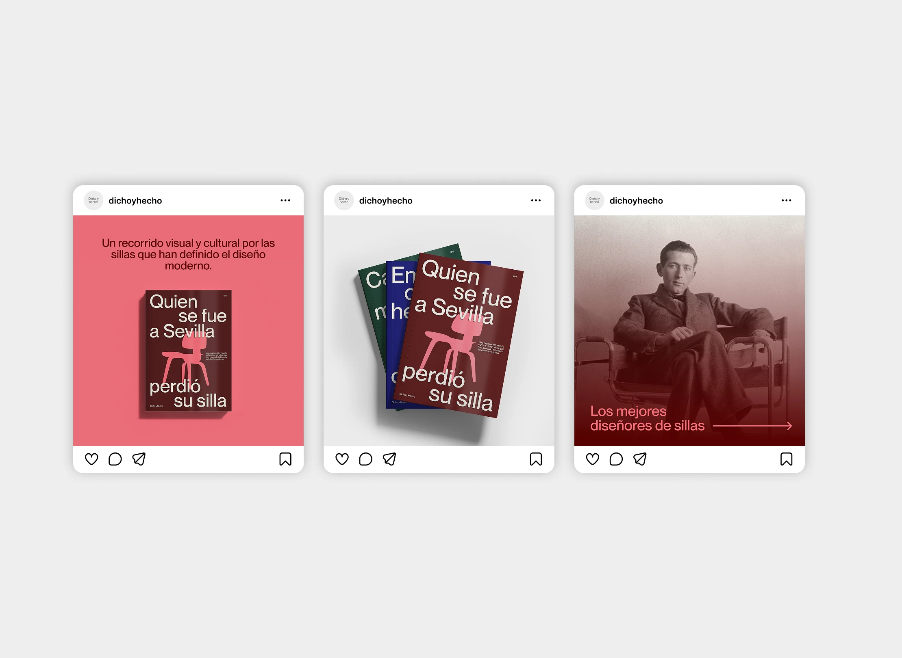

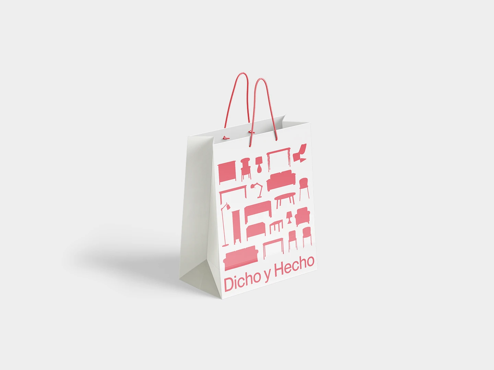